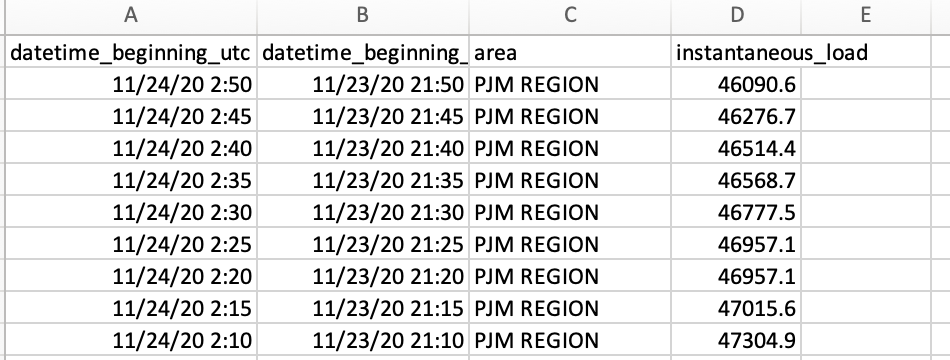
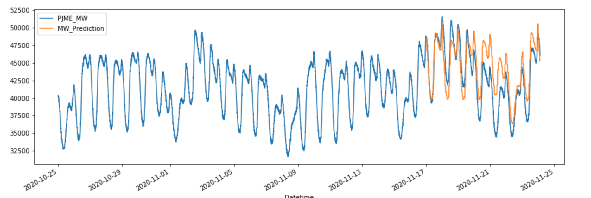
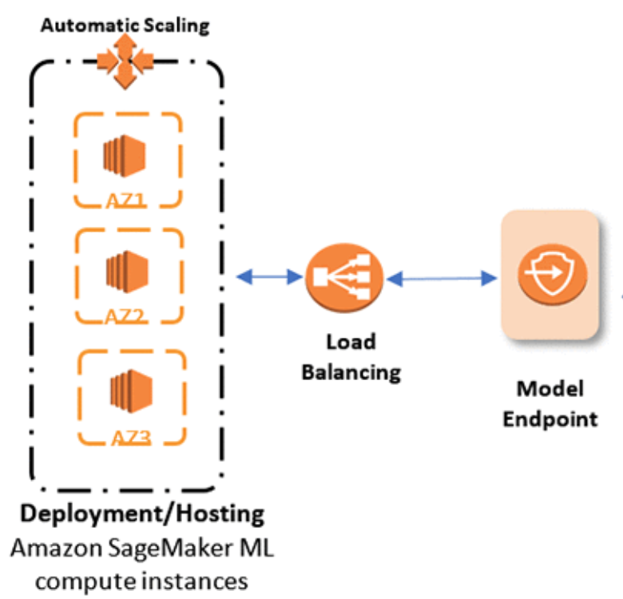
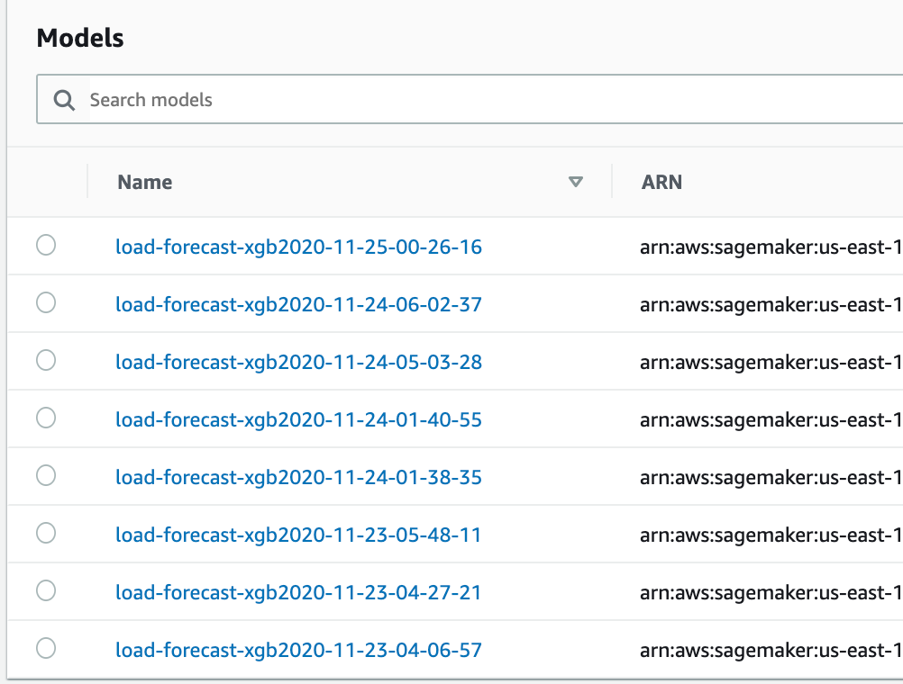
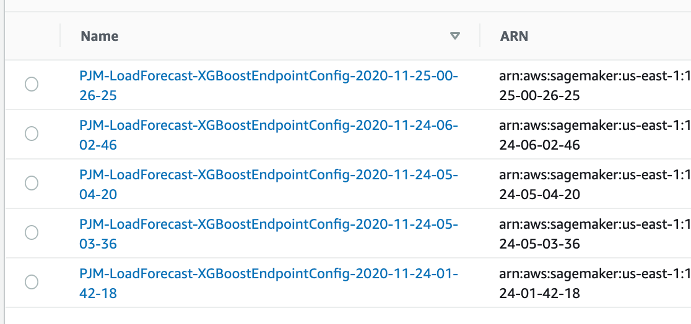

in the energy industry, forecasting the grid load is vital for various commercial optimizations around Day Ahead and Real Time trading, but it also help Independent Power Providers (IPPs) allocate the right generation unites.
we talked previously about energy markets, CAISO, PJM, ERCOT , and others. In this article the goal is not to talk about the accuracy of the model in predicting load, but to highlight AWS SageMaker way of deploying ML models .
The Dataset :
You can use PJM tool dataminer to extract the load , dataminer is PJM’s enhanced data management tool, giving members and non-members easier, faster and more reliable access to public data formerly posted on pjm.com.
the initial dataset will look something like :

to simplify this example we can delete the middle two columns to just keep datetime and load in MW

Splitting Training and Test Data
we will split data into training and test
Training Data : 6578
Test Data: 2021
Feature engineering
One transformation that will make on data is to create new features from datetime field :
- hour of the day
- day of the week
- month
- quarter
- year
- day of the month
- day of the year
- week of the year
# Create features from datetime index
def create_features(df, label=None):
df['date'] = df.index
df['hour'] = df['date'].dt.hour
df['dayofweek'] = df['date'].dt.dayofweek
df['month'] = df['date'].dt.month
df['quarter'] = df['date'].dt.quarter
df['year'] = df['date'].dt.year
df['dayofyear'] = df['date'].dt.dayofyear
df['dayofmonth'] = df['date'].dt.day
df['weekofyear'] = df['date'].dt.weekofyear
Building Model with XGBoost
what is XGBoost :
XGBoost is an optimized distributed gradient boosting library designed to be highly efficient, flexible and portable. It implements machine learning algorithms under the Gradient Boosting framework. XGBoost provides a parallel tree boosting (also known as GBDT, GBM) that solve many data science problems in a fast and accurate way.
XGBoost algorithms are supervised machine learning that has a classifier and a regressor implementation
in this instance we will use xgboost regressor for predictions :
reg = xgb.XGBRegressor(n_estimators=1000)
reg.fit(X_train, y_train,
eval_set=[(X_train, y_train), (X_test, y_test)],
verbose = True)
Results of prediction

AWS Endpoint Deployment
to be able to deploy the model on AWS we must :
- save the model in s3
- create a container with model file
- create a sagemaker Endpoint configuration
- create sagemaker Endpoint

Saving Model to s3
region = 'us-east-1'
bucket = "pjm-load-forecast"
prefix = 'sagemaker/pjm-forecast-xgboost-byo'
bucket_path = 'https://s3-{}.amazonaws.com/{}'.format(region, bucket)
fObj = open("model.tar.gz", 'rb')
key= os.path.join(prefix, model_file_name, 'model.tar.gz')
boto3.Session().resource('s3').Bucket(bucket).Object(key).upload_fileobj(fObj)
Creating Model / Endpoint configuration / Endpoints
importing XGBoost image
import sagemaker
container = sagemaker.image_uris.retrieve("xgboost", boto3.Session().region_name, "1.2-1")
creating Model
primary_container = {
'Image': container,
'ModelDataUrl': model_url,
}
role = get_execution_role()
create_model_response2 = sm_client.create_model(
ModelName = model_name,
ExecutionRoleArn = role,
PrimaryContainer = primary_container)
Once created the models are saved to AWS Sagemaker

Create endpoint configuration
endpoint_config_name = 'PJM-LoadForecast-XGBoostEndpointConfig-' + strftime("%Y-%m-%d-%H-%M-%S", gmtime())
print(endpoint_config_name)
create_endpoint_config_response = sm_client.create_endpoint_config(
EndpointConfigName = endpoint_config_name,
ProductionVariants=[{
'InstanceType':'ml.t2.medium',
'InitialInstanceCount':1,
'InitialVariantWeight':1,
'ModelName':model_name,
'VariantName':'AllTraffic'}])
Same goes for Endpoint configuration, once created you can view them on AWS console

Deploy Endpoint
endpoint_name = 'PJM-LoadForecast-XGBoostEndpoint-' + strftime("%Y-%m-%d-%H-%M-%S", gmtime())
print(endpoint_name)
create_endpoint_response = sm_client.create_endpoint(
EndpointName=endpoint_name,
EndpointConfigName=endpoint_config_name)
Validation
SageMaker allow you to validate your endpoint , here a code snippet for that:
file_name = 'test_point.csv'
with open(file_name, 'r') as f:
payload = f.read().strip()
print('payload',payload)
response = runtime_client.invoke_endpoint(EndpointName=endpoint_name,
ContentType='text/csv',
Body=payload)
result = response['Body'].read().decode('ascii')
Notebook : you can find the notebook for this article on github
Conclusion
AWS Sagemaker has built-in algorithms for both supervised and unsupervised machine learning models. it provides a great platform for training, and deploying machine learning models into a production environment on AWS. By combining this powerful platform with the serverless capabilities of Amazon Simple Storage Service (S3), Amazon API Gateway, and AWS Lambda, it’s possible to transform an Amazon SageMaker endpoint into a web application that accepts new input data, potentially from a variety of sources, and presents the resulting inferences to an end user.